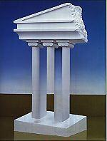

Выполнила: Гурбанович Вероника Андреевна
Группа: 1ПИб-02-3оп-23
ЧГУ ИИТ МПО ЭВМ
2024 г.

Гурбанович Вероника
Среди всех невозможных фигур особое место занимает невозможным трезубец. Невозможный трезубец, также известный как бливет или дьявольские вилы, является необъяснимой фигурой, оптической иллюзией и невозможной фигурой. Кажется, что три цилиндрических стержня превращаются в два бруска.
Если закрыть рукой верхнюю часть трезубца, то мы увидим вполне реальную картину - три круглых зуба. Если закрыть нижнюю часть трезубца, то мы тоже увидим реальную картину - два прямоугольных зубца. Но, если рассматривать всю фигуру целиком, то получается что три круглых зубца постепенно превращаются в два прямоугольных.
Таким образом, можно увидеть, что передний и задний планы данного рисунка конфликтуют. То есть, то что было изначально на переднем плане уходит назад, а задний план (средний зуб) вылезает вперед. Кроме смены переднего и заднего планов в данном рисунке присутствует еще один эффект – плоские грани верхней части трезубца становятся круглыми в нижней.
Эффект невозможности достигается за счет того, что наш мозг анализирует контур фигуры и пытается подсчитать количество зубцов. Мозг сравнивает количество зубцов фигуры в верхней и нижней части рисунка, из-за возникает ощущение невозможности фигуры. Если количество зубцов у фигуры было значительно больше (например, 7 или 8), то это парадокс был бы менее ярко выражен.
Некоторые книги утверждают, что невозможный трезубец принадлежит к классу невозможных фигур, которые не могут быть воссозданы в реальном мире. На самом деле это не так. ВСЕ невозможные фигуры можно увидеть в реальном мире, но невозможными они будут выглядеть только с одной единственной точки зрения.
Никто не знает, кто первым придумал эту фигуру, потому что она появилась практически одновременно в различных изданиях в середине 60-х годов прошлого века. Наиболее известная иллюстрация Нормана Минго (Norman Mingo) была напечатана на обложке журнала "MAD" в марте 1965 года.
Многие художники использовали невозможный трезубец в своем творчестве. Японский художник Шигео Фукуда (Shigeo Fukuda) в 1985 нарисовал невозможную колоннаду.
Психолог из Стенфорда Роджер Шепард (Roger Shepard) использовал идею трезубца для своей картины невозможного слона.
Выполнила: Гурбанович Вероника Андреевна
Группа: 1ПИб-02-3оп-23
ЧГУ ИИТ МПО ЭВМ
2024 г.
Гурбанович Вероника